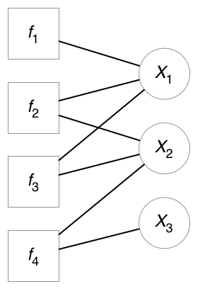
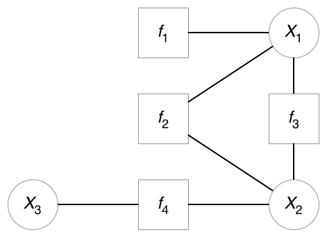

Probability the Grass is Wet?
-
$P(Wet) = \sum\limits_{s = Sprinkler,r = Rain} P(Wet|s, r)P(s|r)P(r)$
-
$P(Wet) = P(T_{W}|F_{S},F_{R})P(F_{S}|F_{R})P(F_{R}) + $
$P(T_{W}|T_{S},F_{R})P(T_{S}|F_{R})P(F_{R}) + $
$P(T_{W}|F_{S},T_{R})P(F_{S}|T_{R})P(T_{R}) + $
$P(T_{W}|T_{S},T_{R})P(T_{S}|T_{R})P(T_{R})$
-
$P(Wet) = 0.0 + 0.9*0.4*0.8 + $
$0.8*0.99*0.2 + 0.99*0.01*0.20$
-
$P(Wet) = 0.0 + 0.288 + 0.158 + 0.002$
-
$P(Wet) = 0.448$
Probability the Grass is Wet and It Hasn't Rained?
-
$P(Wet|\neg R) = \sum\limits_{s = Sprinkler} P(Wet|s, \neg R)P(s|\neg R)P(\neg R)$
- But, $P(\neg R)$ is now $1.0$:
-
$P(Wet|\neg R) = P(T_{W}|F_{S},F_{R})P(F_{S}|F_{R}) + $
$P(T_{W}|T_{S},F_{R})P(T_{S}|F_{R})$
-
$P(Wet|\neg R) = 0.0 + 0.9*0.4$
-
$P(Wet|\neg R) = 0.360$
Markov Random Field
- Undirected dependencies, so cycles allowed.
- Markov Property: Non-adjacent variables are conditionally independent.

Factor Graphs
- Factored function: $g(X_{1}, X_{2}, ..., X_{n}) = \prod\limits_{j=1}^{m} f_{j}(S_{j})$
- where $S_{j} \subseteq {X_{1}, X_{2}, ..., X_{n}}$
- Forms a bipartite graph

- $g(X_{1}, X_{2}, X_{3}) = f_{1}(X_{1})f_{2}(X_{1},X_{3})f_{3}(X_{1},X_{2})f_{4}(X_{2},X_{3})$

- Note that $f_{2}(X_{1},X_{3})f_{3}(X_{1},X_{2})$ form a cycle.
Compute the Marginal of Variable $X_{k}$
- $g_{k}(X_{k}) = \sum\limits_{i=1, i \neq k}^{n} g(X_{1},X_{2},...,X_{n})$
{kind=link}
{kind=link}